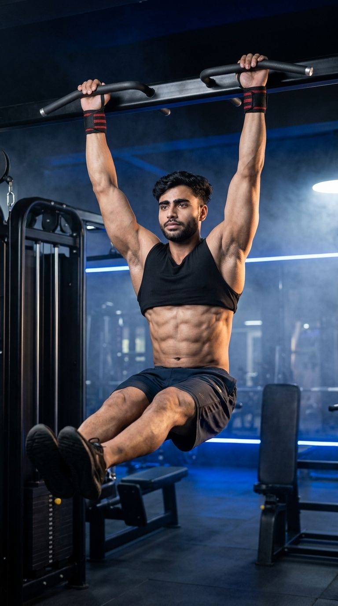

Primary Muscle
Lower Rectus Abdominis
Build Powerful Lower Abs and Core Stability
The Hanging Leg Raise is one of the most effective bodyweight exercises for developing the lower abdominal muscles and improving overall core strength. Performed while hanging from a pull-up bar, it challenges the rectus abdominis, hip flexors, and stabilizing muscles while also enhancing grip strength and body control. Whether your goal is building a stronger core, improving athletic performance, or progressing to advanced calisthenics movements, the Hanging Leg Raise is an excellent exercise for intermediate and advanced trainees.

Lower Rectus Abdominis
Pull-Up Bar
Intermediate
Compound
Discover which muscles power the Hanging Leg Raise and how the supporting muscles work together to improve lower abdominal strength, hip flexion, grip endurance, and total core stability for better athletic performance and body control.
Primary Abdominal Muscle Responsible for Trunk Stabilization and Hip Flexion Control
Lift the Legs While Assisting Hip Flexion Throughout the Movement
Stabilize the Torso and Assist Core Control During Leg Raises
Maintain a Strong Hanging Grip and Shoulder Stability Throughout the Exercise
Discover how the Hanging Leg Raise strengthens your lower abdominal muscles, improves core stability, develops grip strength, enhances athletic performance, and builds a more powerful, functional midsection.
Hanging Leg Raises heavily activate the lower portion of the rectus abdominis, helping develop a stronger, more defined core.
Keeping your body stable while hanging strengthens the entire core and improves balance during athletic and everyday movements.
A stronger core improves force transfer, body control, sprinting, jumping, climbing, and overall sports performance.
Hanging from a pull-up bar strengthens the forearms, hands, and grip while improving shoulder stability throughout the exercise.
The movement strengthens the hip flexors alongside the abdominal muscles, contributing to better lower- body control and mobility.
The Hanging Leg Raise builds the strength and control needed for advanced exercises such as Toes-to-Bar, Dragon Flags, and other high-level calisthenics movements.
Follow these step-by-step instructions to perform the Hanging Leg Raise with proper body positioning, controlled movement, and correct core engagement to maximize abdominal activation while minimizing swinging and momentum.
Hang from a pull-up bar using an overhand grip with your hands about shoulder-width apart. Keep your arms fully extended and your body hanging straight.
Maintain a firm grip and keep your shoulders active throughout the exercise.
Tighten your abdominal muscles, keep your legs together, and prevent your body from swinging before initiating the movement.
Think about keeping your ribs down and your core tight before lifting your legs.
Exhale as you slowly lift your straight legs until they are approximately parallel to the floor or higher while keeping the movement smooth and controlled.
Lift your legs using your abs—not by swinging your body.
Briefly hold the top position while squeezing your abdominal muscles and maintaining full-body control without allowing your legs to swing.
A short pause improves muscle activation and reduces momentum.
Inhale as you slowly lower your legs back to the starting position without letting them swing. Maintain constant core tension before beginning the next repetition.
Control the lowering phase—it is just as important as the lifting phase.
Avoid these common technique mistakes to maximize abdominal activation, improve core strength, and perform the Hanging Leg Raise safely and effectively.
Using momentum to swing your body reduces abdominal activation and makes the exercise much less effective.
Brace your core before each repetition and lift your legs slowly without allowing your body to swing.
Excessively bending the knees shortens the movement and decreases the challenge placed on the abdominal muscles.
Keep your legs as straight as your mobility allows while maintaining complete control.
Letting your legs fall rapidly removes tension from the core and places unnecessary stress on the hips and lower back.
Lower your legs under control while keeping your abdominal muscles engaged throughout the entire repetition.
Losing core tension between repetitions decreases muscle activation and encourages unnecessary body swinging.
Keep your core braced from start to finish, allowing only a controlled pause before the next repetition.
Apply these expert coaching cues to improve your Hanging Leg Raise technique, maximize lower abdominal activation, and perform every repetition with better control, stability, and full-body tension.
Begin each repetition from a completely stable position and avoid using momentum to lift your legs.
Control the movement—don't let momentum do the work.
Tighten your abdominal muscles before lifting your legs and maintain that tension throughout the entire repetition.
A tight core creates stronger, cleaner reps.
Focus on contracting your abdominal muscles instead of relying primarily on your hip flexors to raise your legs.
Think "abs first, legs second."
Lower your legs slowly instead of letting gravity pull them down to keep constant tension on your abdominal muscles.
The lowering phase builds just as much strength.
Progress from mastering proper hanging technique to building exceptional lower abdominal strength, core stability, and body control through increasingly challenging variations.
Build grip strength, shoulder stability, and core control by practicing active hangs and knee raises before progressing to full leg raises.
Grip strength, shoulder stability, core bracing, and body control.
Eliminate body swing, use a full range of motion, and maintain constant abdominal tension throughout every repetition.
Controlled movement, core engagement, breathing, and proper technique.
Progress by raising your legs above parallel toward the bar while maintaining strict form and avoiding momentum.
Progressive overload, abdominal strength, flexibility, and movement quality.
Advance to challenging movements such as Toes-to-Bar, Windshield Wipers, and Dragon Flags while maintaining exceptional body control and core strength.
Advanced core strength, muscular endurance, body control, and long-term progression.
Find answers to common questions about Hanging Leg Raise technique, muscles worked, proper form, training frequency, and how to strengthen your core safely and effectively.
The Hanging Leg Raise primarily targets the rectus abdominis, especially the lower portion, while also engaging the hip flexors, obliques, transverse abdominis, and forearm muscles for grip support.
Yes, keeping your legs straight increases the difficulty and maximizes abdominal activation. Beginners can slightly bend their knees until they build enough strength and flexibility.
Brace your core before each repetition, move your legs slowly, and pause briefly at the top and bottom of the movement to eliminate momentum.
They are generally better suited for intermediate exercisers because they require grip strength and core stability. Beginners can start with Hanging Knee Raises before progressing.
Perform 2–4 sets of 8–15 controlled repetitions. Prioritize strict form and full control over completing a high number of repetitions.
Train Hanging Leg Raises two to three times per week as part of a balanced core routine, allowing your abdominal muscles sufficient time to recover between sessions.
Explore other core exercises that complement the Hanging Leg Raise and help you build stronger abdominal muscles, improve core stability, and develop greater trunk strength through both static and dynamic movements.


Continue strengthening your core with detailed exercise guides covering proper technique, muscles worked, common mistakes, expert coaching tips, and progression strategies designed for every fitness level.